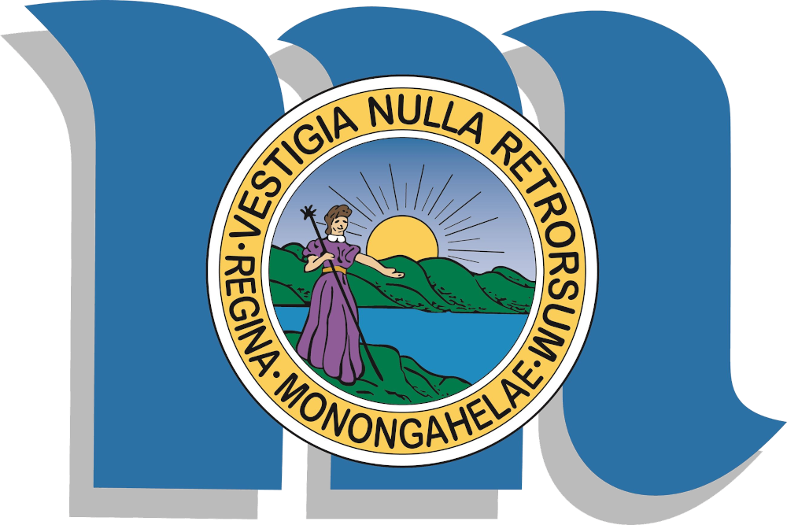

Morgantown, WV
Zeměpisné údaje
- 30 000 obyvatel
- rozloha - 27 km²
- leží na řece Monongahela
- distrikt Monangalia
- severní okraj státu Západní Virginie
Západovirginská univerzita
- Morgantown je univerzitní město, nachází se zde Univerzita Západní Virginie
- WVU - West Virginia University
PRT
Personal Rapid Transport
Osobní Rychlá Doprava
PRT je systém MHD, který funguje na principu malých elektrických vozítek, která jsou plně automatizovaná.
Systém je na objednání, při příchodu do jedné ze stanic si cestující vybere cílovou stanici a za chvíli přijede vozítko, které ho samo odveze do cíle.
Kazdé vozítko má 8 míst na sezení, celkem se dovnitř pohodlně vejde 15 osob.
PRT v Morgantown je nestarší a nejrozsáhlejší systém svého druhu.
Funguje bez větších přestávek od roku 1975.
Na dráze dlouhé 5,8 km je celkem 5 stanic.
Vozítka dosahují rychlosti 30 mph a cesta z jednoho konce dráhy na druhý trvá 11,5 minuty.
Systém spravuje místní univerzita a během semestru převeze denně 15 000 cestujících, převážně studentů.
V provozu je celkem 69 elektřinou poháněných vozítek.
PRT Cram je tradiční soutěž, při které se co nejvíce studentů snaží nacpat do jednoho vozítka.
Rekord největšího počtu je z roku 2000, kdy se v jednom vozítku mačkalo 97 vysokoškoláků.
Zdroje
- https://en.wikipedia.org/wiki/Morgantown_Personal_Rapid_Transit
- https://en.wikipedia.org/wiki/Morgantown,_West_Virginia
- https://en.wikipedia.org/wiki/West_Virginia_University
- https://transportation.wvu.edu/prt
- Google Earth